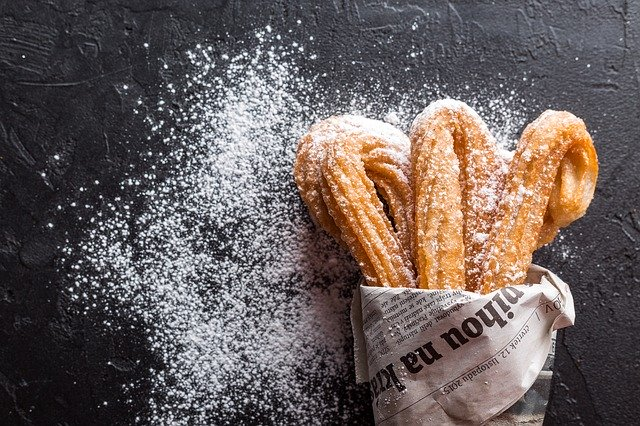

<div class="wrap">
  <div class="container container--flexbox">
  
  <div class="product">
    <section class="product__title">
      <h1 class="product__title-header">Churros de arroz</h1>
      <span class="product__title-tag">Sin gluten / Vegano</span>
    </section>
    <section class="product__description">
      <p class="product__description-tag"> Masa compuesta por harina, agua, y sal. Una vez hecha la masa, esta se coloca en un aparato cilíndrico similar a una manga pastelera y se empuja con un pistón sobre una boquilla por donde sale mediante extrusión, y con sección trasversal en forma de estrella. Finalmente, se fríen en aceite y una vez hechos, a veces, se rebozan en azúcar.</p>
    </section>
    <section class="product__author-name">
      <span class="name">Pepito Flores</span>
    </section>
    <section class="product__price">
      <span class="btn price">6,35€</span>
      <button class="btn btn--add">Añadir</button>
    </section>
  </div>
</div>
</div>

